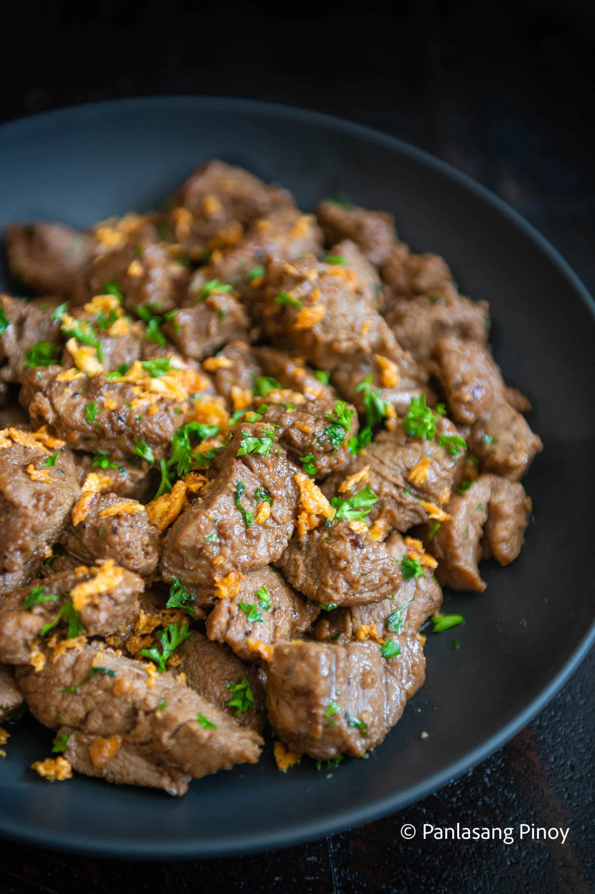

Beef Salpicao

Description
What is a perfect meal for you? For some people, it's extravagance that comes to mind. The finest of steaks, the freshest of seafoods, or the fanciest of other ingredients -- these may be the most ideal! But for others, like myself, there's a certain joy in simplicity. Even the humble ingredients you can find in your own pantry or kitchen can come together to make something extraordinary. Take, for example, this homey but flavorful beef salpicao. Warm and saucy, this dish consists of an assortment of everyday ingredients that make one of the best comfort foods of all time.
Ingredients
- 1 ½ lbs beef tenderloin cubed
- 1 head garlic
- 1 teaspoon salt
- 3 tablespoon salt
- ¼ cup olive oil
- ½ teaspoon ground black pepper
- 5 tablespoons Worcestershire sauce
- 2 tablespoons oyster sauce
Instructions
- Pound garlic using a mortar and pestle tool.
- Combine garlic and olive oil in a pan. Turn on your stove and set the heat to between low and medium. Cook garlic while stirring until it turns golden brown.
- Remove the fried garlic and oil from the pan and place these in separate bowls. Set aside.
- Combine beef, salt, ground black pepper, olive oil, and Worcestershire sauce. Mix well. Let it stay for 10 minutes.
- Heat a clean pan. Once the pan gets really hot, sear the marinated beef until the sides turn brown.
- Add oyster sauce and a bit of butter. Note: save the remaining butter for later. Continue cooking for 3 minutes.
- Add remaining butter along with the fried garlic and parsley. Continue cooking until the liquid evaporates completely.
- Transfer to a serving plate. Serve with rice. Share and enjoy!